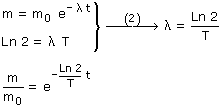
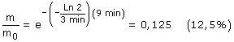

|
 Sustituyendo valores:  Vamos a justificar el resultado: Cada 3 minutos que pasan, la cantidad de sustancia radiactiva se reduce a la mitad, por tanto la cantidad de sustancia restante será: 100% (0 min), 50% (3 min), 25% (6 min), 12,5% (9 min) Efectivamente al cabo de 9 minutos quedará un 12,5% de la cantidad inicial |